-
Character Panoramas
Cinematic portraiture
Detailed 'one frame' narratives allow a glimpse into the life of a (partly fictional) character, while exploring the possibilities of image composition and visual storytelling in 'one shot'.
Inspired by old master's paintings and the art of cinematic scenery composition.
2014 - ongoing
- 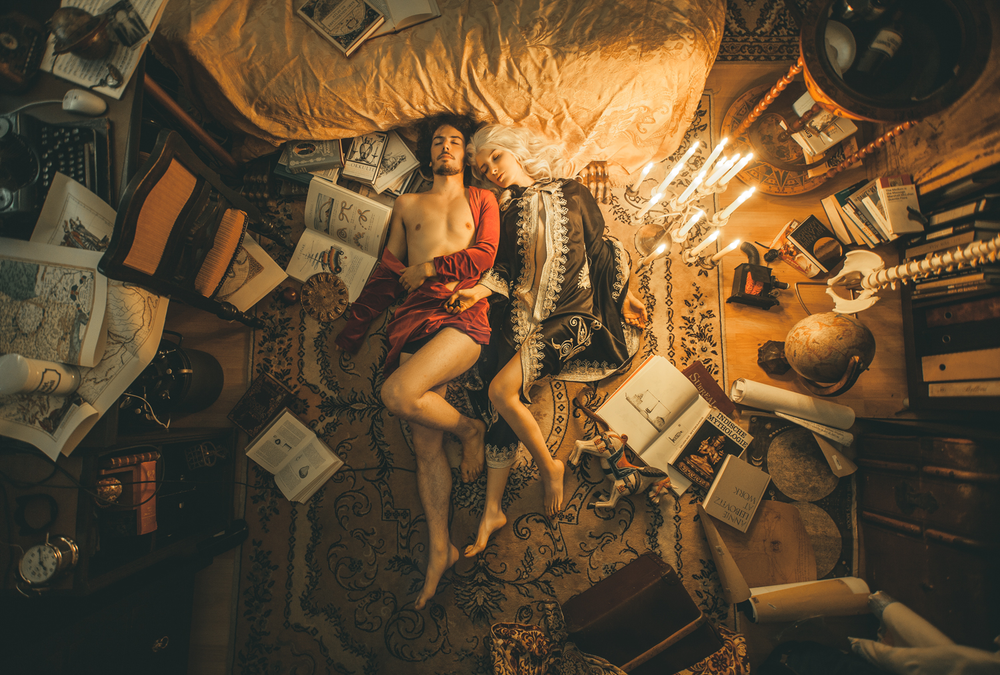
only dreamers left alive
- 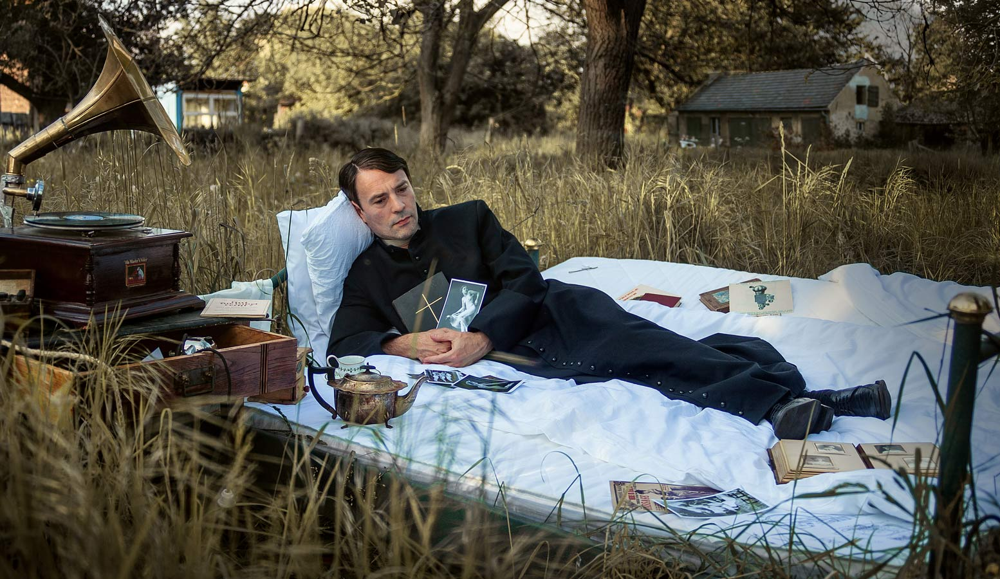
The preacher's dream
- 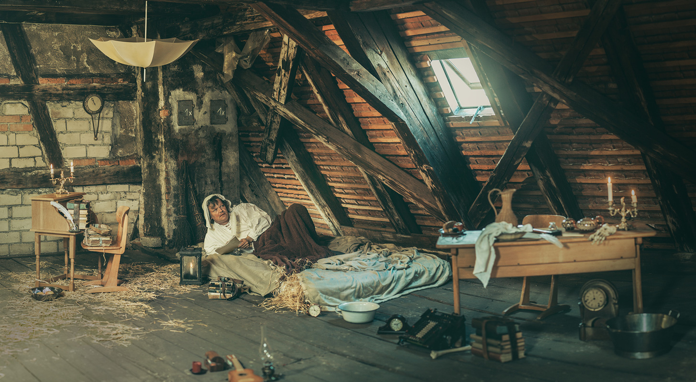
The poor poet
- 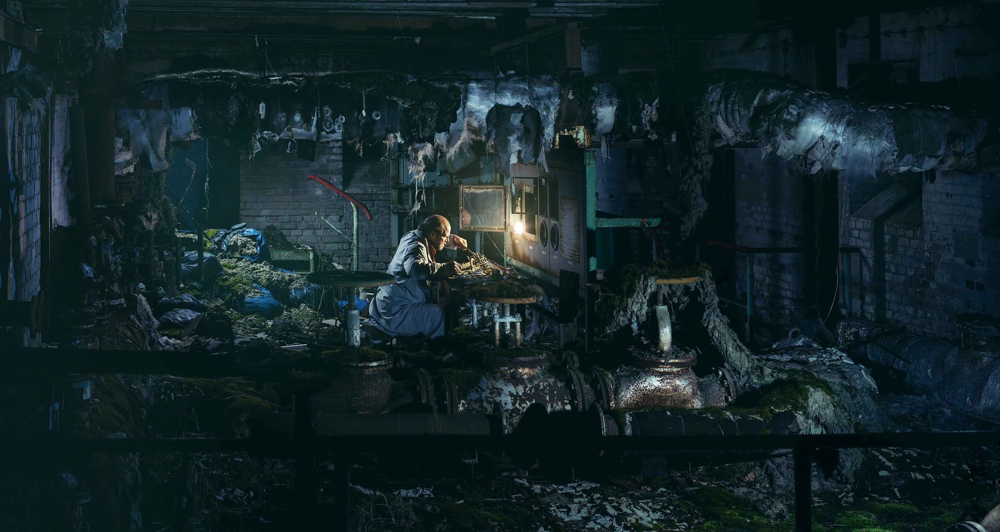
A machinist's workshop
- 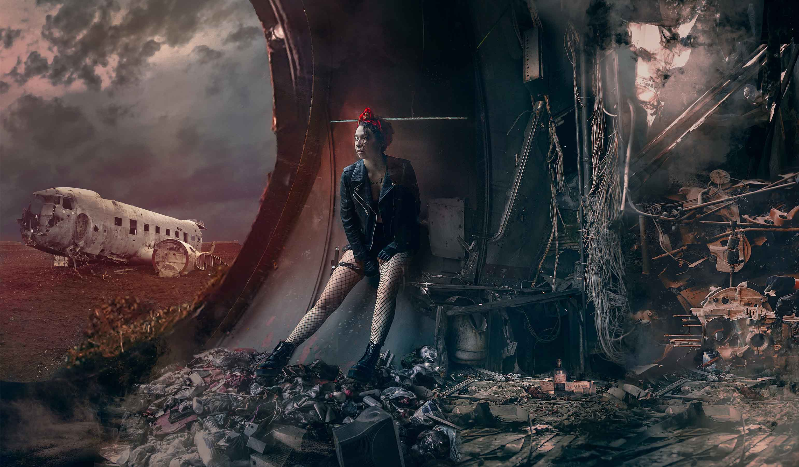
Area 72 - inside the plane
- 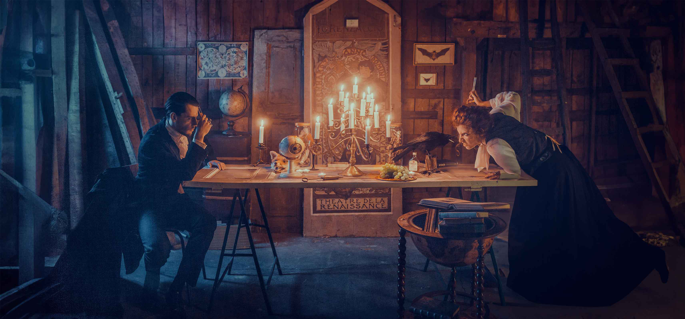
Stuck for eternity
- 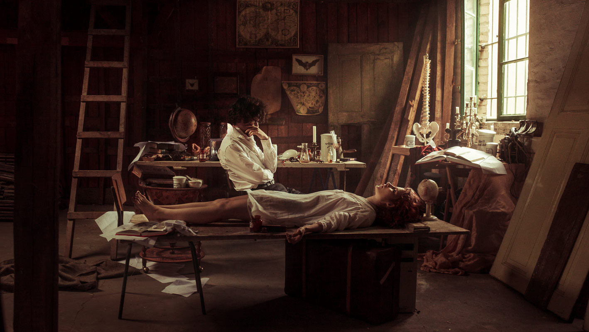
Dr. Abrahams experiment
- 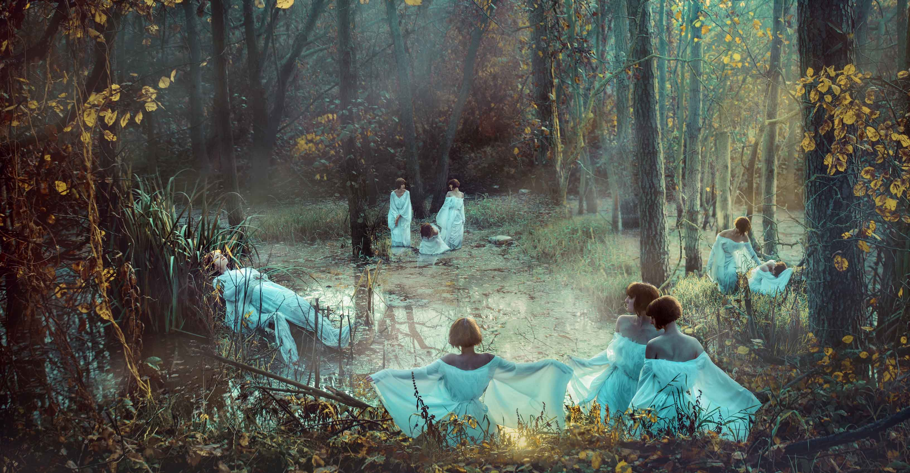
a sacrifice for the fairies
- 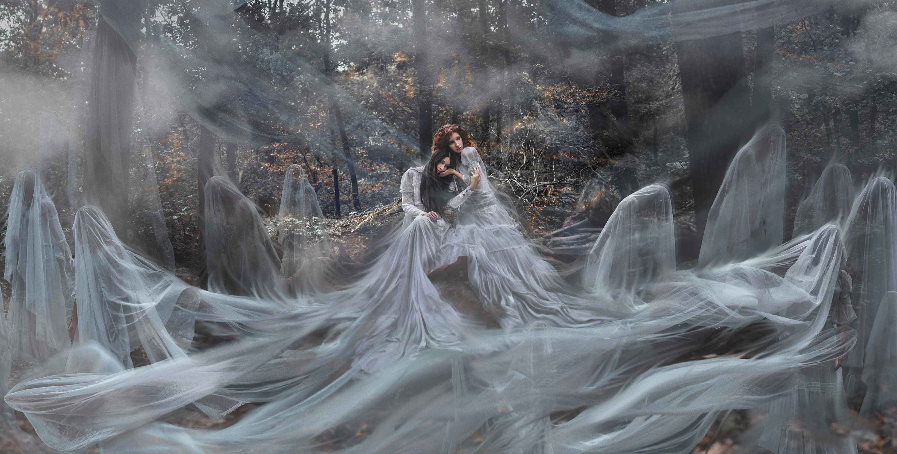
until we melt into shadows
- 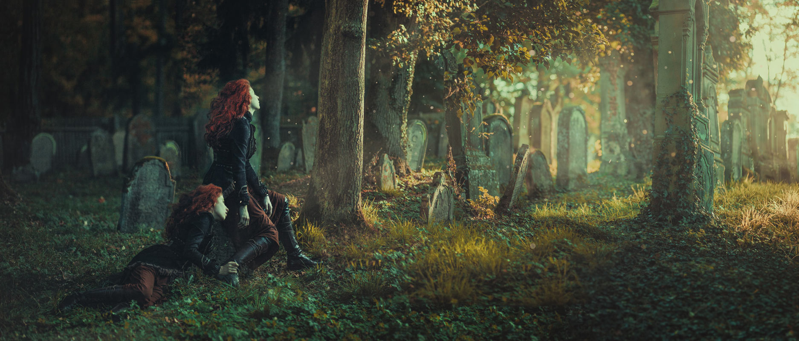
Autumn memories
- 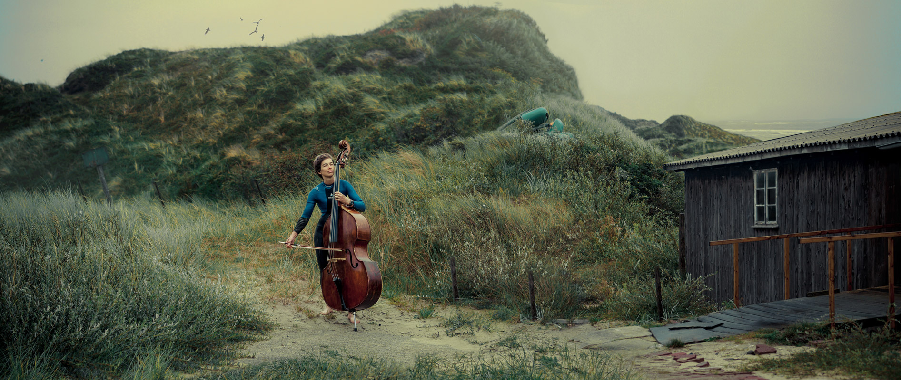
Sound of waves